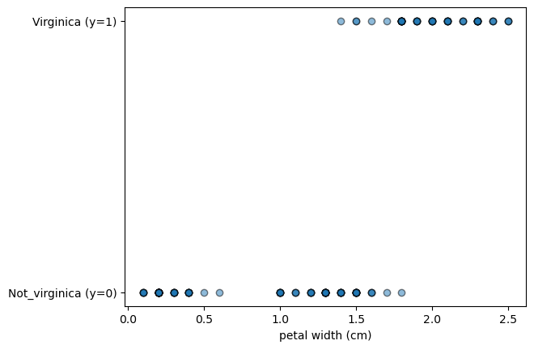
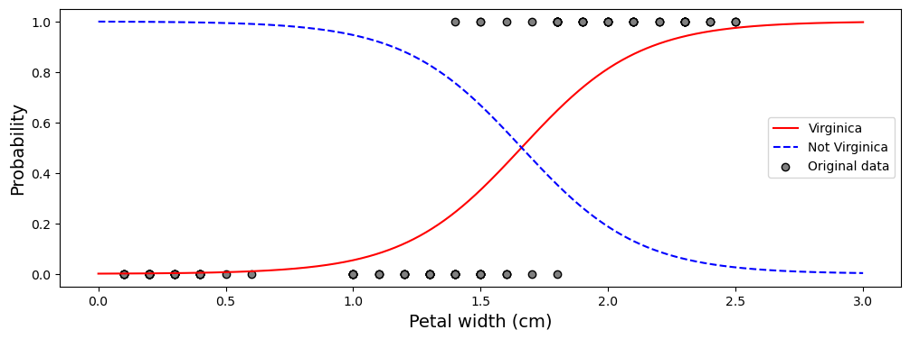
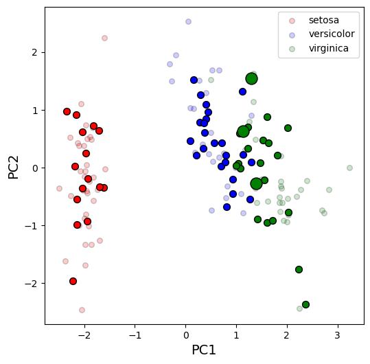
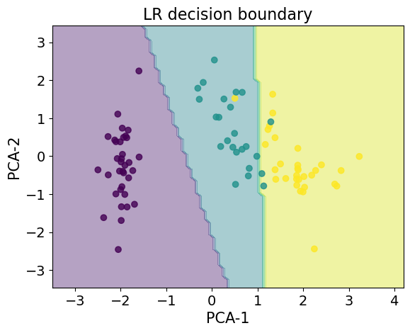
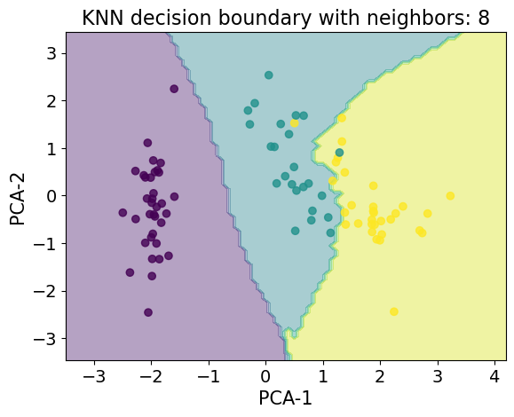

import pandas as pd
import numpy as np
import matplotlib.pyplot as plt
from intro_Data_4_2 import *
from sklearn.datasets import load_iris as li
from sklearn.linear_model import LogisticRegression as LR
from sklearn.neighbors import KNeighborsClassifier as KNN
Logistic Regression#
1. Two class problem with one predictor#
We will start by looking at a simplification of the Iris data - we will consider two classes: Virginica species and not Virginica species, and a single predictor.
# Load data, split into feature/target
data = li()
X = data.data
X_names = data.feature_names
y = data.target
y_names = data.target_names
X_df = pd.DataFrame(X,columns=X_names)
X_df.head()
| sepal length (cm) | sepal width (cm) | petal length (cm) | petal width (cm) | |
|---|---|---|---|---|
| 0 | 5.1 | 3.5 | 1.4 | 0.2 |
| 1 | 4.9 | 3.0 | 1.4 | 0.2 |
| 2 | 4.7 | 3.2 | 1.3 | 0.2 |
| 3 | 4.6 | 3.1 | 1.5 | 0.2 |
| 4 | 5.0 | 3.6 | 1.4 | 0.2 |
y
array([0, 0, 0, 0, 0, 0, 0, 0, 0, 0, 0, 0, 0, 0, 0, 0, 0, 0, 0, 0, 0, 0,
0, 0, 0, 0, 0, 0, 0, 0, 0, 0, 0, 0, 0, 0, 0, 0, 0, 0, 0, 0, 0, 0,
0, 0, 0, 0, 0, 0, 1, 1, 1, 1, 1, 1, 1, 1, 1, 1, 1, 1, 1, 1, 1, 1,
1, 1, 1, 1, 1, 1, 1, 1, 1, 1, 1, 1, 1, 1, 1, 1, 1, 1, 1, 1, 1, 1,
1, 1, 1, 1, 1, 1, 1, 1, 1, 1, 1, 1, 2, 2, 2, 2, 2, 2, 2, 2, 2, 2,
2, 2, 2, 2, 2, 2, 2, 2, 2, 2, 2, 2, 2, 2, 2, 2, 2, 2, 2, 2, 2, 2,
2, 2, 2, 2, 2, 2, 2, 2, 2, 2, 2, 2, 2, 2, 2, 2, 2, 2])
y_names
array(['setosa', 'versicolor', 'virginica'], dtype='<U10')
# Make this a binary problem (virginia vs not virginica)
y_bin = np.array([1 if value == 2 else 0 for value in y])
y_bin_names = ['Not_virginica', 'Virginica']
y_bin
array([0, 0, 0, 0, 0, 0, 0, 0, 0, 0, 0, 0, 0, 0, 0, 0, 0, 0, 0, 0, 0, 0,
0, 0, 0, 0, 0, 0, 0, 0, 0, 0, 0, 0, 0, 0, 0, 0, 0, 0, 0, 0, 0, 0,
0, 0, 0, 0, 0, 0, 0, 0, 0, 0, 0, 0, 0, 0, 0, 0, 0, 0, 0, 0, 0, 0,
0, 0, 0, 0, 0, 0, 0, 0, 0, 0, 0, 0, 0, 0, 0, 0, 0, 0, 0, 0, 0, 0,
0, 0, 0, 0, 0, 0, 0, 0, 0, 0, 0, 0, 1, 1, 1, 1, 1, 1, 1, 1, 1, 1,
1, 1, 1, 1, 1, 1, 1, 1, 1, 1, 1, 1, 1, 1, 1, 1, 1, 1, 1, 1, 1, 1,
1, 1, 1, 1, 1, 1, 1, 1, 1, 1, 1, 1, 1, 1, 1, 1, 1, 1])
# Use one predictor (petal width)
col = 'petal width (cm)'
X = X_df[col]
X
0 0.2
1 0.2
2 0.2
3 0.2
4 0.2
...
145 2.3
146 1.9
147 2.0
148 2.3
149 1.8
Name: petal width (cm), Length: 150, dtype: float64
# make a scatterplot
plt.scatter(X,y_bin,alpha=0.5, ec='k')
plt.xlabel(col)
plt.yticks([0,1], [y_bin_names[i] + ' (y=' + str(i) + ')' for i in [0,1]])
plt.show()

#Create and fit model
log_reg = LR()
log_reg.fit(X.values.reshape(-1,1), y_bin)
LogisticRegression()In a Jupyter environment, please rerun this cell to show the HTML representation or trust the notebook.
On GitHub, the HTML representation is unable to render, please try loading this page with nbviewer.org.
LogisticRegression()
#Reminder of hard vs soft classifications
log_reg.predict(X[75:80].values.reshape(-1,1))
array([0, 0, 1, 0, 0])
log_reg.predict_proba(X[75:80].values.reshape(-1,1))
array([[0.75554163, 0.24445837],
[0.75554163, 0.24445837],
[0.45722097, 0.54277903],
[0.66709636, 0.33290364],
[0.94591643, 0.05408357]])
#Let's fit model to new (synthetic) data, petal widths from 0 to 3 (some code from Machine Learning book)
X_new = np.linspace(0,3,1000)
y_proba = log_reg.predict_proba(X_new.reshape(-1,1))
# Visualize the probability-feature curve
plt.figure(figsize = [12,4])
plt.plot(X_new, y_proba[:,1], 'r-', label = 'Virginica')
plt.plot(X_new, y_proba[:,0], 'b--', label = 'Not Virginica')
colors = ['blue','red']
plt.scatter(X,y_bin, ec = 'k', c = 'grey', label = 'Original data')
plt.ylabel('Probability', fontsize=14)
plt.xlabel('Petal width (cm)',fontsize=14)
plt.legend()
plt.show()

2. Two class problem, all four predictors#
Note that, by default, in sklearn the Logistic Regression will perform an L2 regularization (similar to the Ridge regression), therefore we should standardize our features. Additionally, standardizing is going to speed up the convergence of the solution (you may try running it without the standardization and see what happens).
We will look at a single test-train split.
X_df
| sepal length (cm) | sepal width (cm) | petal length (cm) | petal width (cm) | |
|---|---|---|---|---|
| 0 | 5.1 | 3.5 | 1.4 | 0.2 |
| 1 | 4.9 | 3.0 | 1.4 | 0.2 |
| 2 | 4.7 | 3.2 | 1.3 | 0.2 |
| 3 | 4.6 | 3.1 | 1.5 | 0.2 |
| 4 | 5.0 | 3.6 | 1.4 | 0.2 |
| ... | ... | ... | ... | ... |
| 145 | 6.7 | 3.0 | 5.2 | 2.3 |
| 146 | 6.3 | 2.5 | 5.0 | 1.9 |
| 147 | 6.5 | 3.0 | 5.2 | 2.0 |
| 148 | 6.2 | 3.4 | 5.4 | 2.3 |
| 149 | 5.9 | 3.0 | 5.1 | 1.8 |
150 rows × 4 columns
# Logistic regression with all four features
from sklearn.model_selection import train_test_split as tts
from sklearn.preprocessing import StandardScaler as SS
X = np.array(X_df)
Xtrain,Xtest,ytrain,ytest = tts(X,y_bin,test_size=0.4, random_state=146)
# Standardize the data
ss = SS()
Xtrain_s = ss.fit_transform(Xtrain)
Xtest_s = ss.transform(Xtest)
# Fit the model
log_reg.fit(Xtrain_s, ytrain)
# Generate predictions for the test set
y_pred = log_reg.predict(Xtest_s)
# Look at the confusion matrix
#(compare_classes function is imported from intro_Data.py)
conf_mat, accuracy = compare_classes(ytest, y_pred, y_bin_names)
conf_mat
Accuracy = 0.95
| Predicted | Not_virginica | Virginica |
|---|---|---|
| Actual | ||
| Not_virginica | 38 | 3 |
| Virginica | 0 | 19 |
log_reg.score(Xtest_s, ytest)
0.95
# Visualize misclassified data points
from sklearn.decomposition import PCA
colors = ['red', 'blue']
pca = PCA(n_components = 2)
Xtrain_pca = pca.fit_transform(Xtrain_s)
Xtest_pca = pca.transform(Xtest_s)
# Show the training data
fig,ax = plot_groups(Xtrain_pca, ytrain, colors, alpha = 0.2)
# Show the testing data
plot_groups(Xtest_pca, y_pred, colors, ax=ax, alpha = 1, s = 50)
# Highlight test points that were incorrectly labeled
idx_wrong = ytest != y_pred
plot_groups(Xtest_pca[idx_wrong], y_pred[idx_wrong], colors, ax=ax, alpha = 1, s = 250,
legend_text = ['Not virginica', 'Virginica'], labels = ['PC1','PC2'])
print(idx_wrong)
plt.show()
[False False False False False False False False False False False False
False False False True True False False False False False False False
False False False False False False False False False False False False
False False False False False False False False False False False False
False False False False False True False False False False False False]
3. All predictors, multiple class problem#
y
array([0, 0, 0, 0, 0, 0, 0, 0, 0, 0, 0, 0, 0, 0, 0, 0, 0, 0, 0, 0, 0, 0,
0, 0, 0, 0, 0, 0, 0, 0, 0, 0, 0, 0, 0, 0, 0, 0, 0, 0, 0, 0, 0, 0,
0, 0, 0, 0, 0, 0, 1, 1, 1, 1, 1, 1, 1, 1, 1, 1, 1, 1, 1, 1, 1, 1,
1, 1, 1, 1, 1, 1, 1, 1, 1, 1, 1, 1, 1, 1, 1, 1, 1, 1, 1, 1, 1, 1,
1, 1, 1, 1, 1, 1, 1, 1, 1, 1, 1, 1, 2, 2, 2, 2, 2, 2, 2, 2, 2, 2,
2, 2, 2, 2, 2, 2, 2, 2, 2, 2, 2, 2, 2, 2, 2, 2, 2, 2, 2, 2, 2, 2,
2, 2, 2, 2, 2, 2, 2, 2, 2, 2, 2, 2, 2, 2, 2, 2, 2, 2])
# Logistic regression with all features and multiple classes
from sklearn.model_selection import train_test_split as tts
from sklearn.preprocessing import StandardScaler as SS
X = np.array(X_df)
Xtrain,Xtest,ytrain,ytest = tts(X,y,test_size=0.4, random_state=146)
# Standardize the data
ss = SS()
Xtrain_s = ss.fit_transform(Xtrain)
Xtest_s = ss.transform(Xtest)
# Fit the model
log_reg.fit(Xtrain_s, ytrain)
# Generate predictions for the test set
y_pred = log_reg.predict(Xtest_s)
# Look at the confusion matrix
conf_mat, accuracy = compare_classes(ytest, y_pred, y_names)
conf_mat
Accuracy = 0.95
| Predicted | setosa | versicolor | virginica |
|---|---|---|---|
| Actual | |||
| setosa | 15 | 0 | 0 |
| versicolor | 0 | 23 | 3 |
| virginica | 0 | 0 | 19 |
log_reg.score(Xtest_s, ytest)
0.95
# Visualize misclassified data points
from sklearn.decomposition import PCA
# now there are three classes
colors = ['red', 'blue', 'green']
pca = PCA(n_components = 2)
Xtrain_pca = pca.fit_transform(Xtrain_s)
Xtest_pca = pca.transform(Xtest_s)
fig,ax = plot_groups(Xtrain_pca, ytrain, colors, alpha = 0.2)
plot_groups(Xtest_pca, y_pred, colors, ax=ax, alpha = 1, s = 50)
idx_wrong = ytest != y_pred
plot_groups(Xtest_pca[idx_wrong], y_pred[idx_wrong], colors, ax=ax, alpha = 1, s = 150,
legend_text = list(y_names), labels = ['PC1','PC2'])
plt.show()

plt.figure()
plt.title("LR decision boundary",fontsize=16)
plot_decision_boundaries(Xtrain_pca,ytrain,LR)
plt.xlabel("PCA-1",fontsize=15)
plt.ylabel("PCA-2",fontsize=15)
plt.show()

4. Compare with kNN#
#Step 1 - get best cross-validated kNN model
neighbor_range = np.array(range(2,20))
train=[]
test=[]
k = 10
ss = SS()
X_ss = ss.fit_transform(X)
for n_neighbors in neighbor_range:
knn = KNN(n_neighbors=n_neighbors, weights = 'distance')
tr,te = do_Kfold(knn,X_ss,y,k) #SS()
train.append(np.mean(tr))
test.append(np.mean(te))
idx = test == np.max(test)
print('Optimal #neighbors: ', neighbor_range[idx])
print('Optimal test score: ', np.max(test))
Optimal #neighbors: [ 8 10 11 12 13 14 15]
Optimal test score: 0.9666666666666666
#Step 2 - let's look at cross-val results for just one optimal n_neighbors value
knn = KNN(n_neighbors = 8, weights = 'distance')
tr_knn, te_knn = do_Kfold(knn, X_ss,y,10)
#Step 3 - cross-validation on LR
tr_lr, te_lr = do_Kfold(LR(),X_ss,y,10)
Which would you pick?
np.mean(te_knn)
0.9666666666666666
np.mean(te_lr)
0.9533333333333334
X = np.array(X_df)
Xtrain,Xtest,ytrain,ytest = tts(X,y,test_size=0.4, random_state=146)
# Standardize the data
ss = SS()
Xtrain_s = ss.fit_transform(Xtrain)
Xtest_s = ss.transform(Xtest)
knn = KNN(n_neighbors=8, weights = 'distance')
knn.fit(Xtrain_s,ytrain)
plt.figure()
plt.title("KNN decision boundary with neighbors: 8",fontsize=16)
plot_decision_boundaries(Xtrain_pca,ytrain,KNN,n_neighbors=8)
plt.xlabel("PCA-1",fontsize=15)
plt.ylabel("PCA-2",fontsize=15)
plt.show()
